We, Jaspreet Singh and Gursajan Singh, hereby declare that the project report entitled “DairyFarm: A Web-Based Herd, Milk and Breeding Record Management System for Dairy Farms” is a record of the project work carried out by us under the guidance of . The work presented here has not been submitted elsewhere for the award of any other degree or diploma.
The software described in this report is working and is hosted online. All screenshots in this report were taken from the running application using sample data that we entered for demonstration.
Place: ____________________ Date: ____________________
We would like to thank our project guide, , for the time and advice given to us throughout this project. We are also thankful to the Head of the Department and the faculty members who reviewed our progress and pointed out things we had missed.
We also found the guidance published by NDDB, ICAR and GADVASU on dairy farm management very useful while deciding what records the system should keep.
Finally, we thank our families and friends for their support.
Jaspreet Singh
Gursajan Singh
Small and medium dairy farms in Punjab and the rest of India still keep most of their records on paper: a milk register near the shed, a diary for the vet's visits and, if anyone remembers, a note of the date a cow or buffalo was inseminated. These records get lost, are hard to search and almost never get added up. As a result farmers miss pregnancy checks, dry off animals late, sell milk during a medicine withdrawal period, or simply do not know which animal is giving how much milk.
DairyFarm is a web application that replaces these registers. Every animal is registered with its ear-tag number, species, breed, age, mother and lactation number. Morning and evening milk is recorded daily for each animal on a single screen. Treatments, diseases, medicines, vaccinations and deworming are kept as a history for each animal. Heat, insemination, pregnancy diagnosis and calving are recorded, and the system calculates the dates that matter next: the 21-day heat check, the pregnancy check at 60 days, the dry-off date and the expected calving date (283 days for cows and 310 days for buffaloes). A dashboard shows today's milk, trends and a list of reminders, and reports can be exported to Excel.
The front end is built with React and Vite, and the data is stored in a PostgreSQL database hosted on Supabase, which also handles login. Row-level security makes sure each farm account can only see its own data. The application is deployed on Vercel and works on both computers and mobile phones. For the interface we used a glassmorphism style with neumorphic inputs and claymorphic cards, along with page transitions and loading animations, to make an everyday tool pleasant to use.
Keywords: dairy farm management, herd records, milk recording, breeding management, React, Supabase, PostgreSQL, web application.
India is the largest milk producer in the world, and a large part of that milk comes from small farms with anywhere between five and fifty animals. In Punjab most of these farms keep a mix of buffaloes (mainly Murrah and Nili-Ravi) and cows (Holstein Friesian crossbreds, Jersey and desi breeds like Sahiwal). The money a farm makes depends directly on how well each animal is managed: how much milk she gives, whether she gets pregnant on time, and whether illnesses are caught early.
All of this depends on records. A farmer needs to know when a buffalo was inseminated to know when to check her for pregnancy; needs to know her milk yield to decide whether to keep her; and needs to remember that she was given an antibiotic so that her milk is not sold for the next few days. On a typical small farm this information is spread over a milk register, a few loose pages and the farmer's memory.
Paper-based records on a dairy farm have some clear problems:
The system is meant for a single farm owner or manager who logs in and maintains the records of their own herd. It covers cows and buffaloes, both male and female, from birth (or purchase) to sale or death. It does not handle accounting, milk sales to the dairy cooperative or feed stock in this version; these are discussed in Chapter 9 as future work.
Before writing any code we spent time understanding what a dairy farmer actually needs to track. We looked at the record formats suggested by the National Dairy Development Board (NDDB) and state animal husbandry departments, and read about the reproductive cycle of cattle and buffaloes and the common diseases on Indian farms. This chapter summarises what we learned, since the design of the database and the reminders follows directly from it.
Every animal on an organised farm carries an ear tag with a number. Under the government's INAPH / Bharat Pashudhan programme, animals are given a 12-digit tag, while many farms also use their own short numbers. In our system the tag number is the main way an animal is identified, and it must be unique within a farm.
Animals are milked twice a day, in the morning and the evening, and the two yields are usually different (the morning milking is often slightly higher). Milk is sold on the basis of fat and SNF (solids-not-fat). Buffalo milk typically has 6–8% fat and cow milk 3.5–5%, so recording fat and SNF along with the quantity helps the farmer compare animals and check the dairy's payment slips.
A cow or buffalo comes into heat roughly every 21 days. If she is inseminated (artificial insemination by a technician, or natural service by a bull) and does not come back into heat after 21 days, she may be pregnant. A pregnancy diagnosis (PD) is done by a vet by rectal examination around 45–60 days, or earlier by ultrasound. The table below shows the figures we used.
Table 2.1 Reproductive figures used in the system
| Event | Cow | Buffalo | How the system uses it |
|---|---|---|---|
| Oestrous (heat) cycle | ~21 days | ~21 days | Reminder to watch for heat 21 days after AI |
| Pregnancy diagnosis | 45–60 days | 45–60 days | “PD due” alert at 60 days after AI |
| Gestation length | ~283 days | ~310 days | Expected calving date |
| Dry period | ~60 days | ~60 days | Dry-off date = expected calving − 60 days |
After calving, the animal enters a new lactation. The lactation number (first, second, third…) is an important property of a milking animal, and we increase it automatically when a calving is recorded.
The most common problems on dairy farms in our region are mastitis, foot-and-mouth disease (FMD), haemorrhagic septicaemia (HS), milk fever, retained placenta, diarrhoea in calves and, more recently, lumpy skin disease. Farmers vaccinate against FMD every six months and against HS and black quarter (BQ) once a year, usually before the monsoon, and deworm animals regularly.
One important point is the withdrawal period. After many antibiotics the milk must not be sold for a few days because of drug residues. If this is forgotten, the dairy can reject the milk. We therefore added a “milk withdrawal until” date to every treatment, and the dashboard warns while it is active.
From the above, we listed the information that must be stored for each type of record. This list became the starting point for the database tables in Chapter 5.
In the existing system, the farmer or a worker writes the milk of each animal in a notebook after milking. Insemination dates are written on a calendar or in a diary, and the vet's prescriptions are kept as loose slips. Some farmers use a spreadsheet on a computer, but it is rarely kept up to date because it is not available in the shed and is not designed for this work.
The proposed system keeps all the records in one online database that can be opened from a phone or computer after logging in. Each animal has a profile page that brings together its milk, health and breeding history and its calves. Repetitive work is reduced: milk for the whole herd is entered on one screen, breeding dates are calculated automatically, and recording a calving also creates the calf's record.
Technical feasibility. The system uses widely used, well-documented open-source tools (React, PostgreSQL). It runs in any modern browser, so no app has to be installed on the farmer's phone.
Economic feasibility. The hosting services we used (Vercel and Supabase) have free plans that are enough for a single farm. The only cost for the farmer is a phone or computer with internet, which most already have.
Operational feasibility. The screens follow the farmer's daily routine (milking twice a day, vet visits, AI). Labels use familiar terms such as “PD”, “dry-off”, “lactation” and “withdrawal”, and the layout works on small screens.
Table 4.1 Functional requirements
| ID | Requirement |
|---|---|
| FR1 | The user shall be able to sign up, log in, log out and change their password. |
| FR2 | The user shall be able to add, edit, search, filter and delete animals. The tag number must be unique within the account. |
| FR3 | The user shall be able to enter morning and evening milk, fat % and SNF % for all milking animals of a chosen date on one screen. |
| FR4 | Only one milk record shall exist per animal per day; saving again shall update it. |
| FR5 | The user shall be able to record treatments, vaccinations, deworming, check-ups and surgeries for an animal. |
| FR6 | The user shall be able to record heat and insemination. The system shall calculate the heat check, PD, dry-off and expected calving dates based on species. |
| FR7 | The user shall be able to record a calving; the system shall optionally create the calf, link it to its mother and increase the mother's lactation number. |
| FR8 | The dashboard shall show totals, a 14-day milk chart, herd composition, top producers and due reminders. |
| FR9 | The user shall be able to view reports for a date range and export milk and health records as CSV. |
| FR10 | The user shall be able to download a complete backup of their data. |
Table 4.2 Hardware and software requirements
| For the user | For development |
|---|---|
| Any smartphone, tablet or computer | Laptop with 8 GB RAM |
| Modern browser (Chrome, Edge, Firefox, Safari) | Node.js 22, npm, VS Code, Git and GitHub |
| Internet connection | Supabase account (database and authentication), Vercel account (hosting) |
The application follows a client–server design. The browser downloads the React application from Vercel's servers once. After that, every read and write goes directly from the browser to Supabase over HTTPS. Supabase checks the user's login token and applies row-level security policies inside PostgreSQL before returning any data.
Figure 5.2 shows the context level (level 0) data flow. The farmer is the only external entity. The vet and AI technician do not use the system directly; the farmer enters what they did.
The database has four tables. animals is the central table; the other three refer to it through animal_id. An animal also refers to another animal as its mother (mother_id), and a breeding record refers to the calf that was born (calf_id). Every table has a user_id column which links the row to the account that owns it.
Table 5.1 Important fields of the database
| Field | Type | Description / constraint |
|---|---|---|
| tag_no | text | Ear-tag number, required, unique within an account |
| species | text | cow or buffalo |
| sex | text | female or male |
| status | text | lactating, dry, heifer, calf, bull, sold or dead |
| lactation_no | integer | Number of calvings; increased automatically on calving |
| mother_id | uuid | Refers to another row of animals; set to null if mother is deleted |
| morning_l / evening_l | numeric(6,2) | Litres, must be ≥ 0 |
| record_type | text | treatment, vaccination, deworming, checkup or surgery |
| withdrawal_until | date | Milk from the animal should not be sold until this date |
| method | text | AI or natural |
| pd_result | text | pending, pregnant, not_pregnant or aborted |
| calf_id | uuid | The calf born from this pregnancy (if registered) |
Table 5.2 Modules of the system
| Module | Purpose |
|---|---|
| Authentication | Sign up, log in, log out, change password, protected pages |
| Dashboard | Today's figures, 14-day chart, herd composition, top producers and reminders |
| Animals | Herd register with search and filters; profile page per animal with tabs for milk, health, breeding and family |
| Milk records | Day-wise entry grid for the whole herd with running totals |
| Health & medicine | All treatments and vaccinations, upcoming doses, animals under milk withdrawal |
| Breeding & pregnancy | Insemination records, pregnancy progress, calving entry and calf registration |
| Reports | Period-wise production per animal, disease summary, health cost, CSV export |
| Settings | Account details, password change and full JSON backup |
We wanted the application to look modern rather than like an old government form. We combined three visual styles that are popular in current interface design:
Motion was used with care. Pages fade and rise in with a short stagger, a thin progress bar runs across the top on navigation, numbers count up on the dashboard, charts draw themselves in, and cards lift slightly on hover. A milk-bottle filling animation is shown while the app loads. All animations are switched off if the user's device is set to reduce motion. We chose a green and sky-blue palette to suit the farming theme and kept the font sizes and alignment consistent across all pages.
Table 6.1 Technology stack
| Layer | Technology | Why we chose it |
|---|---|---|
| User interface | React 18 | Component-based, large community, we had studied it |
| Build tool | Vite 5 | Very fast development server and small production build |
| Routing | React Router 6 | Separate URL for every page and every animal |
| Animation | Framer Motion 11 | Page transitions, shared layout animations, spring effects |
| Styling | Plain CSS with variables | Full control over glass, neumorphic and clay effects |
| Database | PostgreSQL (Supabase) | Relational data with foreign keys and constraints |
| Authentication | Supabase Auth | Email and password login with secure tokens |
| Hosting | Vercel | Free HTTPS hosting, deploys straight from GitHub |
| Version control | Git, GitHub | Working together on the same code |
DiaryFarm/
├── index.html entry page and boot loader
├── vercel.json sends every URL to index.html (single-page app)
├── supabase/schema.sql tables, constraints and security policies
└── src/
├── App.jsx routes, page transitions, splash screen
├── lib.js dates, gestation constants, breeding calculator
├── alerts.js builds the reminder list
├── data.js database queries and save/delete helpers
├── components/ Layout, Page, Modal, Forms, Charts, Loader, Toast …
└── pages/ Landing, Login, Dashboard, Animals, AnimalDetail,
Milk, Health, Breeding, Reports, Settings
When an insemination is entered, the form immediately shows the four dates that follow from it. The calculation depends on the species of the selected animal:
export const GESTATION = { cow: 283, buffalo: 310 };
export const PD_AFTER_DAYS = 60;
export const HEAT_CYCLE = 21;
export const DRY_BEFORE_CALVING = 60;
export function breedingPlan(species, inseminationDate) {
const gest = GESTATION[species] || GESTATION.cow;
const expected = addDays(inseminationDate, gest);
return {
heatCheck: addDays(inseminationDate, HEAT_CYCLE),
pdDue: addDays(inseminationDate, PD_AFTER_DAYS),
expected,
dryOff: addDays(expected, -DRY_BEFORE_CALVING),
};
}
For example, a buffalo inseminated on 10 October 2026 gets a heat check on 31 October 2026, PD due on 9 December 2026, dry-off on 17 June 2027 and expected calving on 16 August 2027.
One small problem we ran into was dates shifting by a day. JavaScript converts dates to UTC when formatting them, and since India is 5½ hours ahead of UTC, a date picked late at night could be saved as the previous day. We fixed this by subtracting the time-zone offset before converting the date to text.
The function in alerts.js goes through all open breeding records and health records and produces a list of reminders, each with the number of days left (negative if overdue). The rules are:
The dashboard also lists milking animals for which no milk has been entered today.
The milk screen lets the user change many rows and save them together. Only the rows that were changed are sent. Because the table has a unique constraint on (animal_id, record_date), we use an upsert: a new row is inserted for a new day, and an existing row is updated if the same day is saved again.
await supabase.from('milk_records')
.upsert(payload, { onConflict: 'animal_id,record_date' });
Recording a calving does three things in order: it creates the calf as a new animal (with the mother, sire, species and date of birth filled in), closes the breeding record with the calving date and a link to the calf, and moves the mother to lactating with her lactation number increased by one.
Since the browser talks to the database directly, security cannot depend on the front end. Every table has row-level security (RLS) switched on, with policies that allow a user to read and change only the rows where user_id is their own login id. The user_id column fills itself from the login token, so it cannot be set to someone else's id.
alter table public.animals enable row level security; create policy "own_select" on public.animals for select to authenticated using ((select auth.uid()) = user_id); create policy "own_insert" on public.animals for insert to authenticated with check ((select auth.uid()) = user_id);
The same four policies (select, insert, update, delete) are applied to all four tables. Passwords are never stored by our code; they are handled and hashed by Supabase Auth.
The code is stored in a GitHub repository. Vercel is connected to the repository; it runs npm run build and publishes the dist folder. A small vercel.json file makes sure that opening a link like /app/animals/… directly still loads the application. The live site is available at dairyfarm-manager.vercel.app.
The screenshots below were taken from the running application using a demo account with eleven animals and about six weeks of sample records.
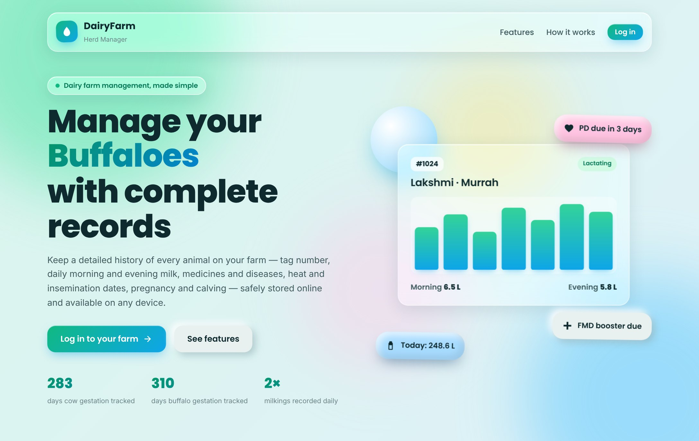
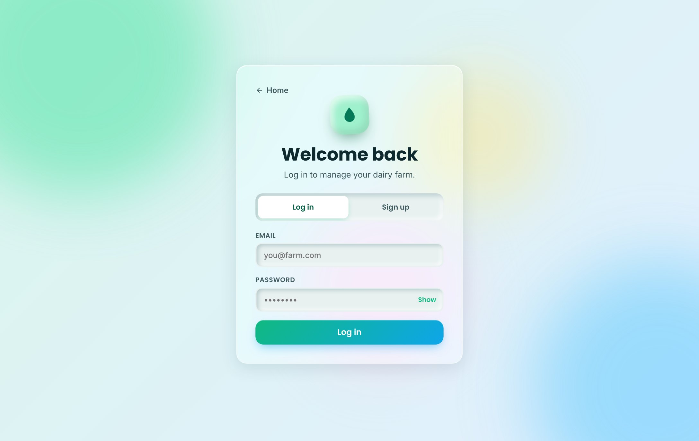
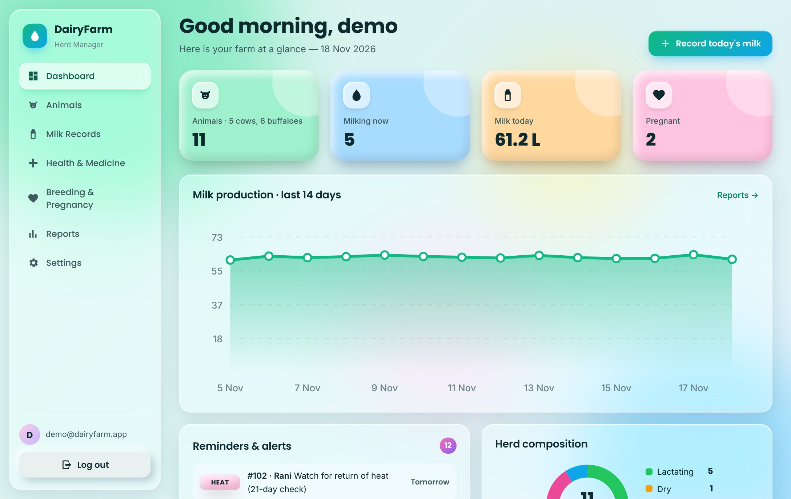
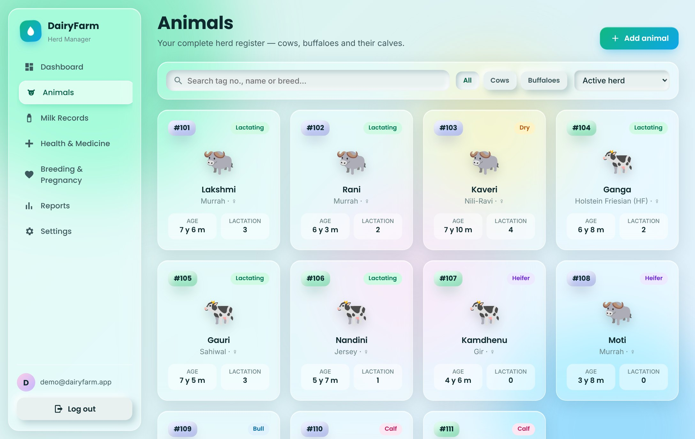
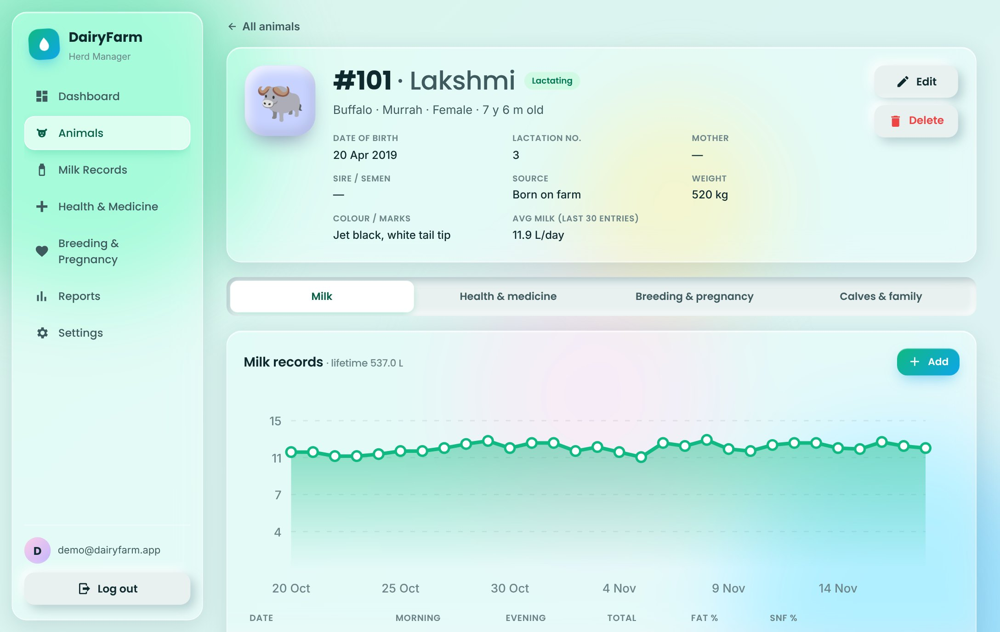
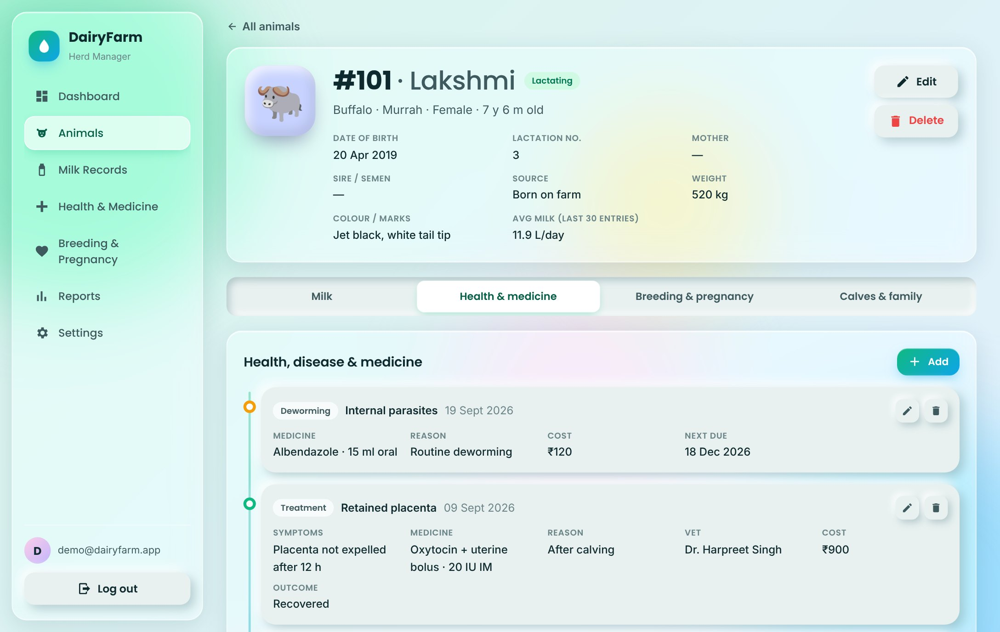
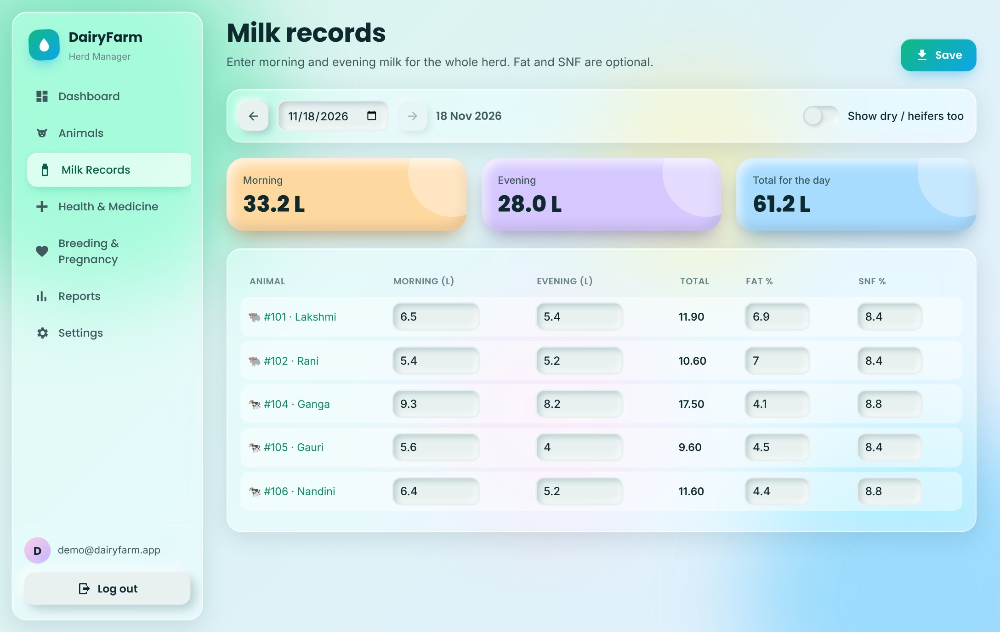
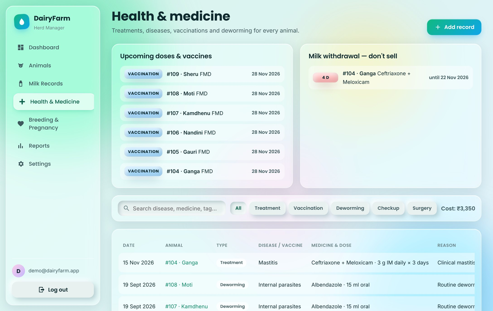
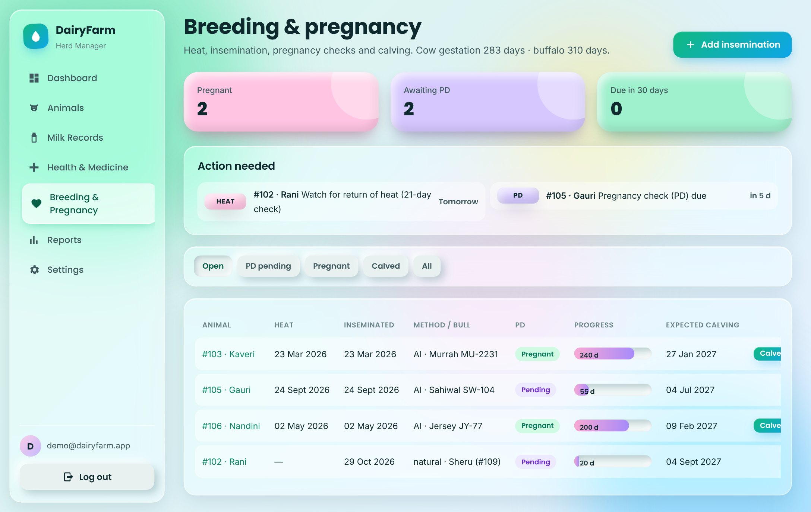
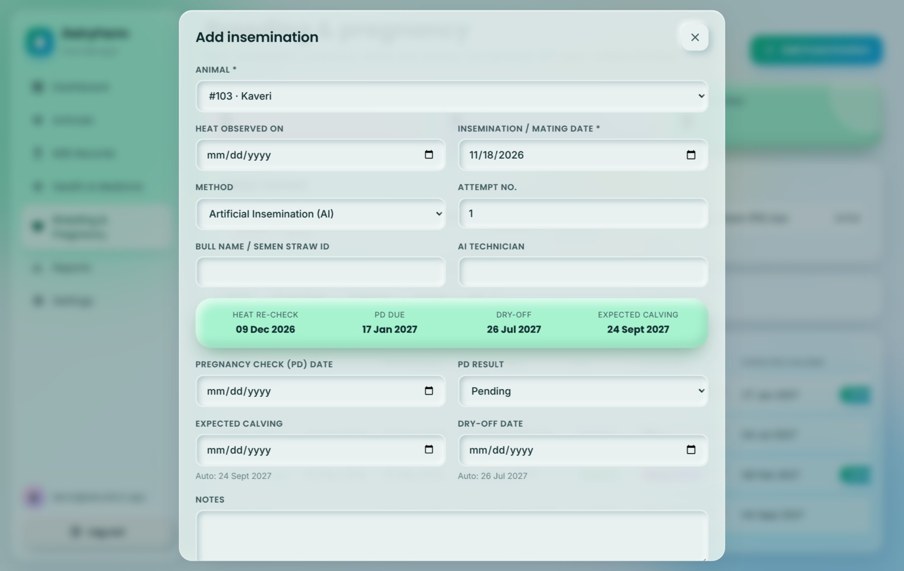
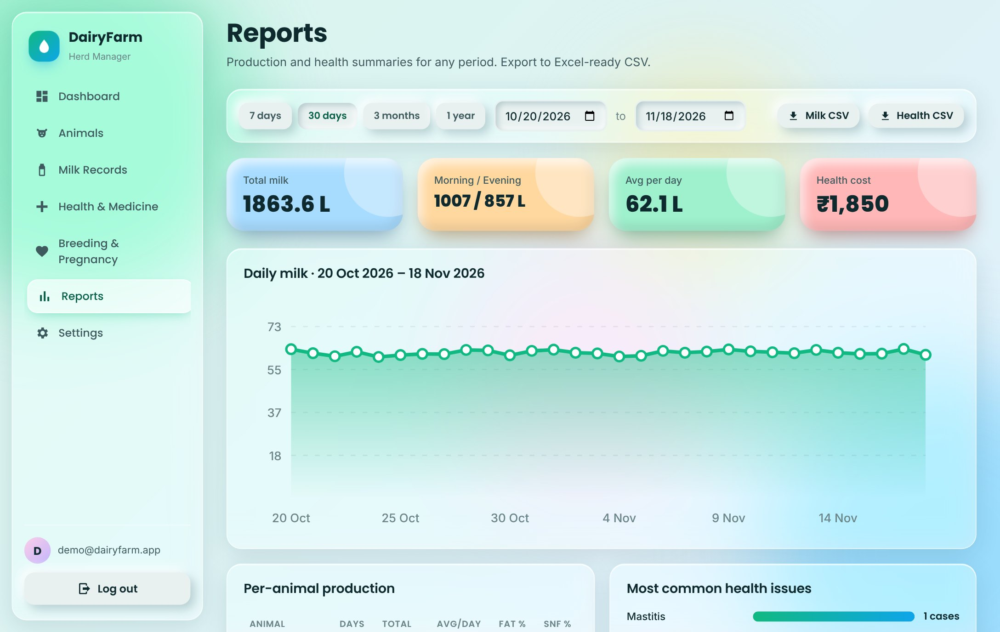
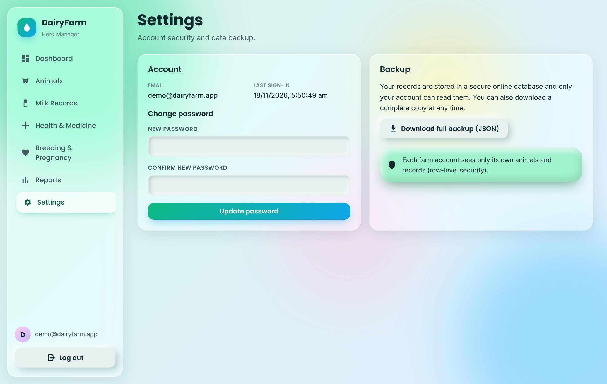
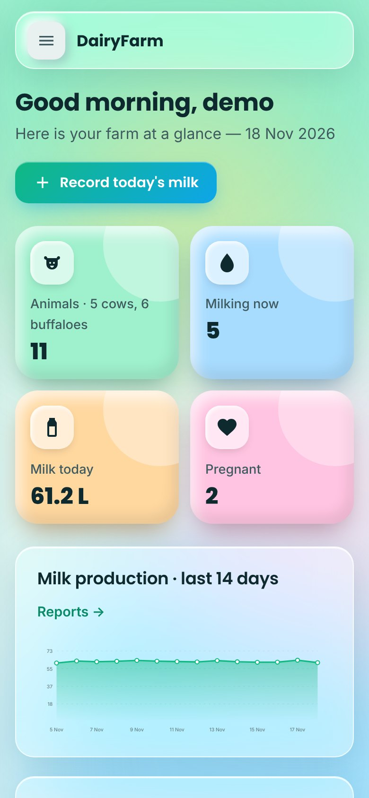
We tested each module by hand as it was completed. We also opened every page at desktop and mobile sizes in an automated browser to check that the layout did not break and that no errors appeared in the browser console. The main test cases are listed below.
Table 8.1 Test cases and results
| # | Test case | Expected result | Result |
|---|---|---|---|
| 1 | Log in with a correct email and password | Dashboard opens | Pass |
| 2 | Log in with a wrong password | Error message shown, stays on login page | Pass |
| 3 | Open /app without logging in | Redirected to login page | Pass |
| 4 | Add an animal with a tag number that already exists | “A record with the same key already exists” message | Pass |
| 5 | Search animals by part of a name or tag | Only matching animals shown | Pass |
| 6 | Enter milk for 5 animals and save | Day total updated; 5 rows saved | Pass |
| 7 | Change one animal's milk for the same day and save again | Existing row updated, no duplicate | Pass |
| 8 | Enter a negative milk quantity | Rejected by the input and the database | Pass |
| 9 | Add AI for a buffalo on 10 Oct 2026 | Expected calving 16 Aug 2027, dry-off 17 Jun 2027 | Pass |
| 10 | Add AI for a cow on the same date | Expected calving 20 Jul 2027 (283 days) | Pass |
| 11 | AI recorded 55 days ago with PD pending | “Pregnancy check due in 5 d” on dashboard | Pass |
| 12 | Record a calving with calf details | Calf created with mother linked; mother becomes lactating, lactation +1 | Pass |
| 13 | Add treatment with withdrawal date 4 days ahead | Animal listed under “don't sell milk” | Pass |
| 14 | Export milk report as CSV and open in Excel | Columns and values correct | Pass |
| 15 | Log in as a second account | None of the first account's animals visible | Pass |
| 16 | Open every page on a 390 px wide phone screen | No horizontal scrolling; tables shown as cards | Pass |
| 17 | Delete an animal that has records | Animal and all its milk, health and breeding records removed | Pass |
In this project we developed DairyFarm, a web application that lets a dairy farmer keep complete records of every cow and buffalo on the farm. It brings together the animal register, daily morning and evening milk, health and medicine history, and the full breeding cycle from heat to calving in one place, and it reminds the farmer of what needs to be done next.
The project gave us practical experience of the whole process of building software: studying a real problem and its users' needs, designing a relational database, building a React front end, securing data with row-level security and deploying the application online. We also learned that small details matter a lot to users, such as calculating dates correctly for buffaloes and cows, or warning about milk withdrawal after medicine.
We believe a tool like this can help small farms reduce losses from missed pregnancy checks and late treatment, and make better decisions about which animals to keep. With the improvements listed in Chapter 9, especially regional languages and offline use, it could be used on many more farms.